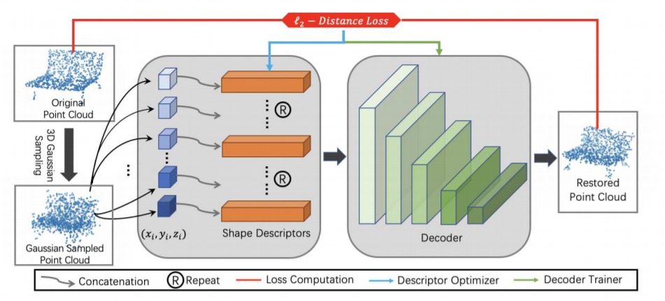

| Status: | Undergraduate Student |
| Program: | Computer Science |
| School: | New York University Shanghai |
| RA Period: | From 2019-09 to 2020-05 |
| I'm a undergraduate student at New York University Shanghai and a research assistant in NYU Multimedia and Visual Computing Lab, advised by Professor Yi Fang. I am broadly interested in 3D Computer Vision, Pattern Recognition and Deep Learning. |
Deep learning models have achieved great success in supervised shape descriptor learning for 3D shape retrieval, classification, and correspondence. However, the unsupervised shape descriptor calculated via deep learning is less studied than that of supervised ones due to the design challenges of unsupervised neural network architecture. This paper proposes a novel probabilistic framework for the learning of unsupervised deep shape descriptors with point distribution learning. In our approach, we firstly associate each point with a Gaussian, and the point clouds are modeled as the distribution of the points. We then use deep neural networks (DNNs) to model a maaximum likelihood estimation process that is traditionally solved with an iterative Expectation-Maximization (EM) process. Our key novelty is that “training” these DNNs with unsupervised self-correspondence L2 distance loss will elegantly reveal the statically significant deep shape descriptor representation for the distribution of the point clouds. We have conducted experiments over various 3D datasets. Qualitative and quantitative comparisons demonstrate that our proposed method achieves superior classification performance over existing unsupervised 3D shape descriptors. In addition, we verified the following attractive properties of our shape descriptor through experiments: multi-scale shape representation, robustness to shape rotation, and robustness to noise.
Figure 1: The pipeline of the proposed method.
This project proposes a novel probabilistic framework for the learning of unsupervised deep shape descriptors with point distribution learning. As displayed in Figure.1, we concatenate a randomly initialized vector z to each point of the sampled instance shape. The L2 point distance loss between the decoded point set and the original point set will be calculated. During the decoder training phase, the loss will be back-propagated to update the shape descriptors and decoder simultaneously. During the descriptor generation phase, the loss will only be used to update the shape descriptors.
Table 1: Classification evaluation on ModelNet40.
In this section, we evaluate our shape descriptor by performing a classification task. For a direct and accurate comparison, we follow the same data settings as Learning a probabilistic latent space of object shapes via 3d generative-adversarial modeling, and our network is trained with the seven major categories of ShapeNet.We then evaluate the generated feature descriptors on the benchmark ModelNet40 by training a simple MLP classifier. There are unsupervised approaches where the networks are trained using the full 55 categories from the ShapeNet55 dataset that contains 57,000 shapes in total. Due to different data settings in the experiment, a direct comparison based on accuracy might not be most appropriate. Table 1 shows the performance comparison between our proposed approach and the state-of-the-art supervised and unsupervised methods. Our unsupervised shape representation outperforms the 3DGAN by scoring 84.7% on ModelNet40. Considered that most of the categories from ModelNet are completely novel to our model, it demonstrates a great out-of-category generalization capability.
Figure 2: Reconstruction results of shape descriptors on instances from ShapeNet.